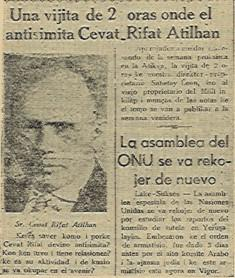

31 MART
FACİANIN CANLI ŞAHİTLERİ VE MÜTALAALARI 31 Mart faciasının en hareketli mihrakını teşkil eden Taş kışlada bizzat hâdisenin içinde yaşamış ve sonra en büyük ıztırabını çekmiş olan Mustafa Turan beyin bu kanlı hâilesi hakkında kaleme aldığı yazıyı üslûbuna ve noktasına kadar sadık kalarak aynen aşağıya alıyoruz:
— 185 —
31 Mart Vak'ası Osmanlı İmparatorluk devrinin Meşrutiyet tarihinde siyasî birtakım entrikalar yüzünden kanlı hâdiselere âlem olmuş bir gündür. Vak'anın hakikî sebeplerinin ne olduğu, askerlerin kimler tarafın-
• < ; •
MUSTAFA TURANBEY
dan tahrik edildiği bütün vuzuhiyle anlaşılmamışdır.
Bu hâdise hakkında şimdiye kadar pek çok şeyler uy-duruldu ve yazıldı, Fakat bunların ekserisinin noksan veya uydurma oldukları muhakkakdır. Çünki hâdiseyi tertip edenler facianın sırlarını o kadar gizli tutmuşlardır ki, hâdisenin içinde bulunanlar bile hakikî sebepleri ni görememişlerdir. Bu yüzden tarihçiler bile nisyâna karışmakta olan 31 Mart Vak'ası hakkında kat'î hükümlerini verememişlerdir. Faciayı tertipleyenler, hâdisenin içinde yaşayanların hepsini kasden öldürmüş veya as-mışlardır Vak'ayı bazıları Sultan Abdülhamidin, bazıları ittihatçıların, bazıları da «İttihâd—ı Muhammedi» Cemiyeti mensuplariyle «Volkan» gazetesi sahibi Derviş Vahdeti'nin temsil ettiği hocaların eseri olduğunu iddia ederler. 31 Mart Vakasının siyasî kökü bir hayli derin-liklere uzanır. Bu ciheti kısaca gözden geçirmek fayda lıdır. 19 ncu asrın son yıllarında Osmanlı İmparatorlu-
ğu siyasî bazı idaresizlikler yüzünden birtakım kapitü-
lâsyonların tesiri altına girmiş siyasi za'fa düşmüştür. Bu nu fırsat bilen müstemlekeci büyük devletler Reval'da toplanıp bir mülâkat yaptılar. O günün İngiliz İmparatorluk camiasının hükümdarı Yedinci Edvard, Rus Çarı İkin ci Nikola, Alman Kayseri İkinci Vilhelm, Avusturya İmparatoru Fransuva Jozef, İtalya Kralı Viktor Ema Noel gizli olarak bir karara vardılar. Bu kararda Osmanlı İmparatorluğunun parçalanmasının derpiş edildiği yolunda haberler sızmakta idi Çok geçmeden İsviçrenin Bazel şehrin bir dünya Siyonist kongresi toplandı. Bu kongrede Yahudilere «Ogando» da bir yurt teklif edildi. Bu yurd Yahudi millî yurdu olacakdı. Fakat ekseriyet bunu red edip yurdun, mukaddes Filistin topraklarında olmasında israr ettiler. (1) Bunun temini çaresinin araştırılmasına karar verdiler. Bu karar gereğince 1893 senesinin ilk yazında Siyonist Cemiyeti kurucularından Teodor Herzl adında bir Mason Yahudi yurdun temini için İstanbula gelmiş o günün haham başısı olan Moşe Levi bir he-
— 187 —
yet halinde Yıldız Sarayında Sultan Abdülhamid'in huzuruna çıkmışlardı.
Şevketlû âzametlû Padişah—ı âlempenah efendimiz hazretleri, zati şahanelerine Yahudi kullarınızın tazimat ve istirhamlarını arzetmeğe geldik. Bu sadık kullarını zın mukaddes Filistinde yerleşmeleri için müsaadei şaha-nelerini, hâki payımıza yüz sürerek niyaz ediyorlar. Uluv-vü Cenâb—ı mülûkânelerine ve ferman—ı hümayunları-
na bir mukabelet şükran olmak üzere beş milyon altın hediyemizin lütfen kabul buyurulmasını arz ve istirham eyleriz, diye padişaha rüşvet teklifinde bulunmuşlardır.
Halbuki Sultan Abdülhamid İsviçrede verilen kararı çok tan haber almış, cevabını bile hazırlamıştı. Çünkü bu sırada Rusyadan birçok Yahudi mültecileri gelmekte ol-duğunu ve bunların esas gizli maksatlarının ne olduğu-nu biliyordu. Sultan Abdülhamid heyeti sükunetle dinledikten sonra huzurundan defolup gitmeleri için mabeyin-cisine emir vermişti.
Derhal Başkâtib Kara Tahsin Paşaya dikte ettirdiği bir fermanla Yahudilerin Filistine hiccretlerini menetmiş-
ti. Siyonist ve tevabiî Masonlar Sultan Abdülhamidden koparamadıkları imtiyaz yüzünden padişah düşman ol-muşlar, siyasî mücadele yolu ile bu işin başarılmasına karar vermişlerdi. Evvelâ Balkanlarda işe başladılar. Rum elile, Makedonyada Malisorlar, Arnavutlar, Bulgar ve Sırp çetelerini tahrik, edip devletin başına bir çok gaileler açtılar. Diğer taraftan Taşnak Komitecileriyle anlaşıp İstanbulda ihtilâl çıkarıp Osmanlı Bankasını bastılar. Dü-
veli muazzamanın müdahalesini sağladılar. Devletin itibarını ecnebîlere karşı küçük düşürmek istediler. Gerek padişah, gerekse Türk milletinin cesareti sayesinde bu ihtilâlden bir netice alamadılar. Hâdise kapanmıştı. Bu sefer Sultan Abdülhamidi öldürmeğe karar verdiler. Vi-
- 188 -
yanada yaptırdıkları cehennem makinesi denilen saatli bombayı gümrükten geçirdiler. Taşnak komitecileri bir cuma günü Yıldız selâmlığında bombayı patlattılar. Pa-dişaha birşey olmadı. Fakat birçok askerlerin parçalanıp ölmesine sebep oldu. Bunda da muvaffak olamayan Siyonist ve tevabii Masonlar bu sefer faaliyetlerini Paris üzerinde teksif ettiler. Mutlakıyet idaresine muarız olup Parise firar eden birçok münevver Türkler vardı. Siyonistler bunlarla birlik olup para yardımı, gazete neşri gibi mücadele yollarıyle Sultan Abdülhamid aleyhine çalıştı-
lar. Hâdiseler inkişaf ettikçe faaliyetlerini artırdılar. İttihatçıların Meclisi Mebûsân Reisi Mason Ahmed Rıza ve arkadaşları SİYONİST'lerle kaynaştılar. Hâdiseler ilerledi. İttihâd ve Terakki Cemiyeti kuruldu. Selanik DÖN-ME'leri de bu işe katıldılar. Cemiyetin iç bünyesine kadar nüfus ettiler. Temiz ve inkılâpçı Türk münevverleri bunların gizli maksat ve emellerini sezemediler Cemiyetin ileri gelenlerinden bazılarını, hattâ Cemiyetin kurucularından Sadr—ı azamı ve Dahiliye Nâzırı olan Talât Paşayı bile Mason yaptılar. 10 Temmuz 1324 günü HÜR-RİYET - - ADALET - MÜSAVAT — UHUVVET umde-leriyle hürriyet ilân edildi. Osmanlı İmparatorluk Camiasında yaşayan ekalliyetler MÜSAVAT umdesi gereğince bizimle can—ciğer kardeş oldular. Mebuslar seçildi. Fakat Mebûsân Meclisinde hiçbir zaman Türklerle kaynaşamadılar. İtalyan tabiiyetinde olduğu halde Selanik Meb'-
usumuz olan Yahudi Masonlardan Emanuel KARASSO
denilen herif Osmanlı İmparatorluğunun yıkılması için herşeyi yaptı. Türk milletinin başına bir kara belâ oldu.
Birgün Meclisi Mebusanda Sadrı Azam Talât Paşa ekalliyetler hakkında müsavat umdesi gereğince Osmanlıların kardeş olduklarına dâir beyanatta bulunurken.
Bulgar Mebusumuz Boşo ayağa kalkarak:
— 189 —
— Paşa, Paşa. Sen Osmanlıların kardeş olduklarını söylüyorsun amma, bizler Osmanlı Bankası kadar Osmanlıyız, diye bağırdı.
Bu sözler Mecus Zabıtlarında kayıtlıdır. Farmasonlar, Cemiyetin içbünyesine nüfus edip karakterini bozdular.
Günler geçtikçe Cemiyet o hale geldi ki, devletin siyasî, idarî, askerî her kademesine nüfus ederek cebir ve tahakkümle Hürriyet kahramanlığı edasını güden bir zümre haline geldi.
10 Temmuz 1324 te memlekete kayıtsız, şartsız bir hürriyet rejimi getiren (1) istibdattan milleti kurtaran İttihat ve Terakki Cemiyetine o günün gençleri bizler canla başla bağlanmış, memlekete bir adalet inkılâbı ya-pıldığına inanmışdık. Ben de herkes gibi hürriyetin ilâ-
nından hadisatın sonuna kadar kelle koltukta, tabanca belde Cemiyetin vereceği her emre münkad fedailerin den biri olmuştum. Ne yazık ki, Cemiyetin iç bünyesine giren SİYONİST ve tevabiî MASON parazitleri yüzünden hesapsız aldatıcı siyasetler Cemiyet idarecilerinin karakterini bozdular. İnkılâbı yapanlar şımarık ve mütehak-kim bir zümre halini aldı. Yeni rejim gereğince memlekette askerî idarî ıslahat ve tensikat yapılacakdı. Osman lı İmparatorluğunun duraklama ve gerileme devrinin biriktirdiği tortuların temizlenmesi için yenilikleri lâzımdı.
Bu iş için bir hayli paraya ihtiyaç vardı. Devletin itibarı zedelenmiş, tevâli eden harpler herşeyi ezmişti. Fırsatı ganimet bilen MASONLAR Cemiyete cazip bir yol gös-terdiler. Yıldızda Sultan Abdülhamidin elinde senelerin biriktirdiği zengin bir hazine vardı. Padişah bu parayı millet için saklıyordu. Bu hazine ecnebî devletler tarafından padişaha hediye edilen kıymetli mücevherat vesaire ile, otuz üç senedenberi ölen Sultanlardan kalan bir ser-vetti. Bu hazine sarayın bahçesinde bir havuzun altında
— 190 —
gizli bir mahzende saklı idi. Fakat hazinenin nerede oldu-
ğunu sarayda ancak beş kişi biliyordu. Bunlardan biri Sultan Abdülhamid, diğerleri Nâzik Eda ve Müşfika ka-dın efendilerle, birinci musahip Cevher ağa, ikinci muşa-Hassa Ordusu Arap Askerlerinden ZUHUF Birliği hip Nadir ağa idi. (Bu ifşaatı bil'lahara Göztepede kom-
şûm olan merhum Nâdir ağanın kendisinden dinlemiş
tim.) Bu hazineden başka Viyana Bankalarında padişa-hın bir hayli altunu vardı. Bunlar ne güne duruyorlardı?
Birçok müzakerelerden sonra MASON'ların teşvikiyle Cemiyet şu karara vardı:
Meşrutiyetin ilânında olduğu gibi, askerî bir isyan tertip edilerek. Padişah tahtından indirilecek ve bu fırsattan istifade edilerek Yıldızdaki servete el konacak. Güya bu para ile de memleketin muhtaç bulunduğu askerî. idari
- 191 -
tensikat ve tasfiyeler yapılacak, istibdattan eser kalmaya çak, Vatan gül, gülistanlık olacak... Halim, selim bir şahsiyet olan Veliahd Reşad efendi Padişah olarak Osmanlı tahtına geçirilecekti. Merkezi umumide verilen gizli karar mucibince askerî isyanın tatbikinde hocalarında ka-rıştırılması dinî taassubu körükleyeceğinden bu bakımdan onların maşa olarak kullanılması derpiş edildi. Ya-rım asır evvelisine ait bu olay dinine ve an'anesine bağ-
lı dindar askerlerin ruhunda bir reaksiyon yaratacağı muhakkaktı. Onun da çaresini buldular. O zamanlar Türkiyenin her tarafından asker alındığı halde İstanbul bundan muaftı, askere alınmazdı. Taşralılar biri medrese ye kayıd olundu mu onlar da askere alınmaz, bütün softalar askerlikten istisna edilirlerdi. Meşrutiyetin ilanı ile bu avantaşlar ordatan kalktı. Tabiatıyle bir. gayri mem-nunlar zümresi doğdu. Cemiyet bunları da plâna dahil edip isyana İRTİCA şekli verip Şeriat isteriz vaveylası nı yaptırdı. Hâdiseye bilmiyerek katılan bu zavallıların hepsi imha edildi. (2) ittihâd ve Terakki Cemiyetinin tertip ettiği ihtilâlde birçok zavallıların kanları dökülece-
ğini, memleketin bu yüzden fâide yerine zarar göreceği ni ileri sürerek Cemiyetin ağır başlı, dürbîn azasından ba-zıları bu karara şiddetle muhalefet ettilerse de, ne yazık ki, bunların muhalefetleri 31 Mart'ın kanlı faciasına ma-ni olamadı. İsyan plânını hazırlayanlar, dikkate şayan bir kahpelikle işe başladılar. Selânikte Meşrutiyeti ilân eden ve bu uğurda her tehlikeyi göze alarak, netice alan avcı taburları Hürriyet rejimini İstanbula getirmiş
lerdi. Bunlar ikinci, üçüncü ve dördüncü avcı taburları idi. Zabitleri arasında tabur kumandanı DÖNME Remzi gibi Masonlar da vardı. SİYONİST'ler bunların arasına da girmişlerdi. Bu taburların efradı seçme cesur Türk evlâtları olup memlekete hürriyet getirdikleri için diğer
- 192 -
askerlere karşı kendilerinde haklı olarak bir tefevvuk hisleri vardı. Çok dikkate şayandır ki İttihat ve Terakki Cemiyeti isyanı bunlara yaptırmaya kararverdi. Halbuki bunlar İstanbulda yeni rejimin bekçileri idi. O zaman Taş kışlada şu askerî birlikler vardı: Hassa ordusuna mensup ikinci fırkanın yedinci ve sekizinci alaylarının piyade taburlariyle, nümune bölükleri, istihkâm taburlariyle, üçüncü ve dördüncü avcı taburları vardı. İkinci av-cı taburu Sarayburnu'nda idi. Ben o zaman yedinci alayın muzikasında bir subaydım. Meşrutiyet ilân edilince İttihâd ve Terakki Cemiyetine girdim. Aynı zamanda Cemiyetinin fedailerinden idim. 31 Mart faciasının sıklet merkezi Taş Kışla idi. Facianın başından sonuna kadar içinde bulunmuş, halen sağ olarak yaşamakta olan tek şahidiyim. 31 Mart hâdisesi hakkında elli senedenberi ya-pılan neşriyatın hiçbirisi doğru ve hakikî olarak yazılma mışdır. Hiçbir muharrir Taş Kışla içinde cereyan eden müthiş hadise ve facialara zerre kadar temas etmemiş, hâdisenin, facialar faciasının mihrakına kasden dokunma-mışdır. Çünkü orada cereyan eden ve cihan tarihinde misli görülmemiş kitle halindeki katliamların te'vil ve tefsi-re tahammülü yoktur. Bu facianın hakiki karakteri Cemiyetçe gizli tutulduğundan bu mevzuda neşredilen yazı-
ların cümlesi içinde yaşadığımız facianın yanından bile geçmemiştir. Ve hakikatten uzaktır. Bundan dolayı ölmeden facianın içyüzünü tarihe bildirmeyi vazife bildim.
İttihâd ve Terakki Cemiyeti kendi menfaati ve prestiji için binlerce Türk evladının kanlarını SİYONİST ve uşakları MASON'ların kahpe dalaverelerine uyarak, beyhude yere akıtmıştı. Neticede ellerine de birşeyler geç-
medi. Okuduğumuz kitap ve makalelerde tarihin aldatıl-dığını görüyor, içim sızlıyor, acı duyuyorum. Vatandaşla-rıma hâdisenin nisyana karışmış olan taraflarını olduğu
— 193 —
F: 13
gibi yazıyor, gördüklerimi aynen sunuyorum: HADİSE NASIL BAŞLADI, NASIL BİTTİ?
O devrin icabı her cuma günü Yıldızda Selâmlık me-rasimi yapılır, Padişah, şahane bir merasimle Camiye gelerek Cuma namazını edâ ederdi. 31 Mart Vakasından on gün evvel bermutâd avcı taburlarını Yıldıza selâmlık res-mine bizim muzıka götürmüştü. Avdette kışlaya geldiğimizde her koğuşta sarıklı, sakallı hocalar gördük. Sebebini sorduk. Bunların Hassa Ordusu Kumandanlığının emrile erlere dinî öğütler vereceklerini söylediler. Hocalar hergün muayyen zamanlarda kışlaya gelip askerlere dinî nasihada bulundular, (1) On gün sonra hocalar gö-
rünmez oldular. Muhterem okuyucularım bu olay isyanın başlangıcını ve fesadın atılan ilk tohumunu teşkil eder. İttihat ve Terakki Cemiyeti paralar sarfederek askerin dinî duygularını kamçılamak maksadiyle tertip lenen plân gereğince bu noktadan işe başlatılmıştı. Bir sabah erkenden toplanma borusu çalındı. Bütün kışla eratı avluda toplandılar. Üst Nizamiye kapısından maiyetle riyle beraber birkaç Paşa göründü. «Selâm dur» kumandası verildi. Paşalar ihtiram vaziyeti aldılar Padişahın marşını çaldık. Arkadan üç defa selâm... Askerler üç de-fa, «Padişahım çok yaşa» diye bağırdılar. Meğer bu Paşalar sahte üniforma giymiş İttihat ve Terakki Cemiyeti nin ileri gelen şahsiyetleri idi. İçlerinde tanıdığım Baha-eddin Şâkir ve Mithat Şükrü beyler de vardı.
Paşalardan biri askere hitaben: Şevketlû Padişahı-
mız, efendimiz hazretlerinin ferman—ı hümâyunlarını okuyacağını, bunu can kulağıyla dinlemelerini söyledi.
Bizler bu paşaların yakınında olduğumuzdan matbaada yaldızla basılmış, üzerinde tuğray—ı hümayun bulunan fermanı görüyor ve okunurken gayet vazıh duyuyorduk
- 194 -
Bu fermanda hülâsa olarak şöyle deniliyordu:
«Balkan ufuklarında kara bulutlar dolaşıyor. Siz asker evlâtlarım bu yurdun bekçilerisiniz. Düşmanla çar-pışırken daha iyi görebilmeniz için yeni bir başlık giye-ceksiniz. Şeyhul—İslâmdan fetvasını da aldım. Bunda di-nî bir mahzur yoktur, ben irade ediyorum,» deniliyordu.
(1) Paşa bir paketten yeni başlığı çıkardı. Bu başlık En veriye biçiminde önü siperli bir başlıktı. Paşa başındaki fes yerine yeni başlığı giydi. Biz de bir marş çaldık. Askerler paşaların önünden geçtiler. Sonra da paşalar çe-kilip gittiler. Meğer Cemiyetin fedailerinden on kişi kadar da sahte çavuş, baş çavuş kıyafetinde askerî tahrik için kışlaya girmişler. Bunların arasından Cemiyetten tanıdığım Hatip Ömer Naci bey, Çerkez Nâzım, Çerkez Ahmet ve arkadaşları vardı. Bunlar tahsisatı mesture den para alıp Cemiyetin amaline hizmet eden fedailerdi.
(Hattâ bil'ahara Cemiyet Nâzım'la Ahmede Bakırköyün-de Zeki beyi öldürtmüş. Birinci Cihan Harbinde de Van Divan—ı Harbine gönderilen Ermeni Mebuslardan Zeh-rab ile Varteks efendileri yolda öldürdükleri için Cemâl Paşa tarafından divan-ı Harp karakiyle Şam'da asılmış-
lardı.)
Bunlardan Ömer Naci bey kışla avlusunda bir istihkâm arabasının üzerine çıkıp, zabit üniformasiyle bağırmaya başladı,: Hey asker kardeşler! Gelin buraya diye askerleri etrafına topladı. Siz Müslüman değil misiniz?
Bizi anamız, babamız dinî bir. uğruna askerlik yapmak için gönderdi. Bunlar şapka giydirip bizleri gavur yapacaklar ne duruyorsunuz, ecdadımız bu uğurda kanlarını, canlarını verdiler. Bunlar Hürriyet yaptık diye dinimizi değiştirecekler. Müslümanlık elden gidiyor. Mebûsân Mec-lisine gidip derdimizi anlatalım, diye askerî ayaklandır-dılar. Diğer taraftan Beyoğlu Topçu kışlasında da aynı
— 195 —
plân takip edildiğinden onlar da ayaklandırılmıştı. Hâdiseyi önlemek isteyen zabitleri bir koğuşa kapatıp kapıla-rına süngülü nöbetçi diktiler. Avcı taburlarına hitaben: Sizler gâvur olmak için mi Hürriyeti yaptınız?. Sizin vazifeniz hem Hürriyeti hem de dinimiz olan Müslüman-
- 1 9 6 -
lığı muhafaza etmekdir. Din elden giderse dinsiz Hürriyet olur mu? diye kışladaki bütün askeri ayaklandırdı-
lar. (1).
31 Mart salı günü önde bizim Yedinci Alayın bandosu, arkamızda Üçüncü vc Dördünccü Avcı Taburlariyle Taş Kışlada bulunan Hassa Ordusuna mensup askerler vardı. Kabataş yolu ile Tophaneye geldiğimizde oradaki askerler de bize katıldı. Havaya atılan silâhlar halkı ayaklandırdı. Kalabalık bir çığ halini almıştı. Taksim Kışlasın daki topçu askerleri de köprü başında bizlere karıştı.
Yeni camiye geldiğimizde Medreselerden toplanıp (1) da ha evvel hazırlanmış olan hoca kıyafetindeki mahşeri kalabalığa karıştırıldı. İlk ŞERİAT İSTERİZ avâzesi burada işitildi. Askerlere şapka giydireceklermiş, Din—i Muhammedi buna cevaz vermez. Hürriyeti kabul ettikse gâ-
vurluğu kabul edemeyiz gibi bağrışmalar arasında ve insan seli halinde Sultan Ahmede geldik. Askerler Mebuslar Meclisini (Yanan eski Adliye binasını çevrelediler. Ha vaya atılan silâh sesleri biraralık kesildi. Avcı taburunda baş çavuş Arnavut Hamdi bir kahraman oldu! Kimi şeriat isteriz, kimi şapka giymeyiz gibi gürültülere hocaların bir ağızdan getirdikleri tekbirlerle iş başka bir mahiyet aldı Vaziyet o hale geldi ki, kimin kimden ne istediği anlaşılmaz oldu. Bu sırada Meclis kapısından çıkıp gitmek isteyen Lâzkiye Mebusu Sekip Arslan beyi gören kalabalık arasından bazı sesler işitilmeye başladı: İşte bize şapka giydirmek isteyenlerden birisi... (2)... Silâhlar patladı, zavallıyı öldürdüler. Bu zatı meğer Tanin Başyazarı Hüseyin Cahit'e benzeterek, o zannederek Öldürmüşler. Tam bu sırada hâdiseyi önlemek maksadiyle beyanatta bulunmak! isteyen Adliye Nazırı Nâzım Paşayı bir kurşunda yere serdiler. Silâh sesleri tekrar başladı. Dönüşte Tanin
— 197 -
matbaası ile diğer bir matbaa yağma edildi. Taş Kışlaya dönüşümüzde hapishanenin kapıları açılıp siyasî asker mahpusları serbest bırakıldı. Kışlada yüksek rütbeli zabit kalmadığından askerî disiplin namına da birşey kalmamıştı...
10 Nisan 1325 Cuma günü askerleri yıldıza selamlığa götürdük. Bu selamlık Sultan Abdülhamidin otuz üç yıl süren saltanatının son selamlığı olmuştu. Her cuma selamlığında yıldız çevresindeki Arnavut Arap Zuhaf alayları yeşil sarıklarıyle, Arnavutlar kırmızı şeritli cepkenli poturlarıyle gösterişli çalımlariyle, bölük kolloriye, mûtad olan resmi geçit yapılırdı. O gün geçit resmi yapılmadı. Hünkar yaverleri selamlıkta mevcut bulunun bütün zabitlerin huzura çağrıldıklarını tebliğ ettiler. Yaverlerin delaletiyle huzura kabul edildik. Aramızda yüksek rütbeli zabit yoktu, selâmlığa gelmemişlerdi. Huzurda askerce sıralandık. Padişahın yanında Hassa ordusu kumandanı Mahmut Muhtar paşa ile Serasker Rıza Paşa vardı Pa-dişah hulasa olarak şunları söyledi:
«Asker evlatlarıma selâm ve irâdemi tebliğ ediniz.
Hareket ordusu adiyle üçüncü ordudan gelip Ayastafanosta (yeşilköy) karargâh kurmuş olan askerler de sizler gibi Türk askerleridir. Dedi kodulara inanmasınlar. 31
Mart günü sultan Alımedde olduğu gibi silâh filan istima-line kalkışmasınlar, y a ı n d a k i p a ş a l a r ı n ı i m a ederek: bu hususta lâzım g e l e n e m i r l e r i n verilmiştir. İğfalât ve teşvikata kapılmasınlar. Kışlalarında sâkin olsunlar Askerlere şapka giydirilmek içün okunan ferman sahtedir. Düşmanlarımız tarafından tertip olunan maksatlı bir sûi kasttır Benim böyle bir fermanım zin-kâr olamaz. Onları aldatmışlar. 31 Mart günü yapılan ha-diseden Çok müteessirim. Fena maksatlara müstenid gizli kuvvetler tarafından tahrik ve teşvik edilmişlerdir.
- 198 —
Taşkışlada şehîd edilen Erkanı Harp Binbaşı Muhtar bey Müteyakkız olup bu gibi kötü teşvikata aklanmasınlar.
Bu bir siyâsî suikasttır. Kışlalarında sakin olsunlar»...
Diye askerlere tebligatta bulunulmasını irade etmiş-
ti Eğer Sultan Abdülhamid Istanbulda mevcut bulunan kendisine sadik hassa ordusuna karşı koyma ve yahut vur emri vermiş olsa idi, 31 Mart faciası Osmanlı ordusu içtin daha kötü neticeler verebilirdi. Fakat Sultan Abdülhamid bunu yapmadı. Mukadderata boyun eğdi. O gün kü Osmanlı ordusunun durumunu bilmek faydalıdır.
Meşrutiyet ilânından sonra ittihat ve terakki Cemiyetine mensup inkılapçı zabitlerin çoğu kendilerine mühim mev-
- 1 9 9 -
kiler tenin etmişlerdi. Bunlardan erkân-ı harp kaymakamı Cemal bey üçüncü ordu erkan-ı harbiyesinden ayrıl-mış, Enver, hafız Hakkı, Fethi beyler ataşe milliter ol-muşlardı. Bunları gören Cemiyetin komiteci zabitleri Meşrutiyeti biz kazandık diye büyük mevkilere geçmek hırsına kapılmışlardı. Muvaffak olamayanlar muhalefete geçmişlerdi. Siyasetin orduya karışması tehlikeli rekabet ler, şahsi ihtiraslar orduda yaygın bir şekil almıştı. Bu yüzden itilâfçı zabitler, halaskarlar, arnavut BAŞKIM-cılar gibi Muhtelif zabit grupları türemişti, (2) velhasıl ordunun içine giren fesatçılar yüzünden Birlik bozulmuşdu.
Binbaşı Muhtar beyin canaze töreni.
(2) 31 Mart kanlı ve namussuz ihtilâli Siyonist —
Mason — Dönme müşterek puanının neticesidir. Gayesi Sultan Abdülhamid'i devirmekti. Çünkü O, kilit taşı gibi yerinde kaldıkça bu üç düşman emellerine nâil olamazdı.
— 200 —
Halbuki İstanbulda çok iyi talim ve terbiye görmüş, kısmen siyasete karışmamış mükemmel bir hassa ordusu vardı. Bu ordunun başında 1293 ve 1313 harplerinde muvaffakiyetler göstermiş kumandanlar olduğu gibi Türk Osmanlı ordularının ıslahına memur dört danede Alman Paşası vardı. Şunlardır: Fon Der Golz, Fon Hofner, Kamp Hofner, Gromkom paşalar ...Bunlardan başka askeri bandoların ıslahına memur birde Miralay Lanke bay vardı.
Hareket ordusundada çok değerli inkılapçı zabitler vardı.
Fakat nede olsa alel acele hazırlanan bu ordunun arasına Sırp, ulgar, Rum çetelerinin karışması orduyu _______________________________
Bunun gayet canlı misalini ordumuzu mümtaz tüm ge-nerallerinden Bugün Kadıköyde ve hayatta olan Hüseyin Hüsnü Eltaşdan dinledim aşağıya aynen alıyorum: Hüsnü Paşa diyor ki:
— Harbiyeden mezun olunca yanyada bir alaya tayin edildim. Kumandanımız Rahim bey isminde gayet kıymet li bir zattı. İçimizde birde BAŞKIM'cı Arnavut yüzbaşı'
Kasım bey vardı. Rahim bey bir gün kendisine şöyle hi-tabetti:
— Kasım bey kardeşim, düne kadar kardeş gibi geçi-niyorduk, aramızda böyle ayrılıklar, Başkımcılar filan yoktu şimdi ne odu bize?
Kasım beyin cevabını, şimdi hepimiz, her Türk dikkatle dinleyelim:
— Evet! Düne kadar hep kardeş, vatandaş ve dindaş-
tık... Aramızda hiç bir ayrılık ve tefrika yoktu. Çünki bizleri yekdigerimize bağlayan bir kuvvet vardı, oda: hiç şüphesiz Sultan Abdülhamid idi. Onu sizler kendi emel ve maksadlarınız içün yıktınız. Yolunuzu ayırdınız, Bizde yollarımızı ayırdık. Anladınızmı Rahim bey başkımcılık nedir?!...
— 201 —
yarı başı bozuk bir hale getirmişti. Fesatçıların istedikleri bu idi... Nitekim hâdisât bu yüzden çok kanlı oldu.
l1 Nisan cuma günü padişahın huzurundan çıktık, Askerlere padişahın selâm ve irâdesini tebliğ ettik.
Son cuma selâmlığında resmi geçit yapılmadı. Padi-
şahın camide çıkmasını bekletmediler. Kışlalarımıza döndük. Taşkışlanın Harbiye mektebi cihetinde Cephanelik vardı. Akşam üzeri avcı taburunun askerleri bizim yedinci ala yerlerinin beklemekte olduğu Cephanelik nö-
betçilerini zorla nöbet yerlerinden uzaklaştırmışlar, kış-
lada disiplin diye bir şey olmadığından buna kimse mani olamamışdı. Avcıların kovuşları alt katta olduğu içün bü-
tün gece cephane sandıklarını kendi kavuşlarına taşıdılar Ben nöbetçi subayı olduğum için yatmamışdım. Sabaha karşı kışlanın etrafında bir takım hareketler başladı, üst katta bulunduğum için her tarafı görebiliyordum. Pencerelerden baktım, hepsi beyaz külahlı, çarıklı, göğüsleri çapraz fişeklikli, saç sakal karışık asker kılığında olmayan bir kalabalığın kışlayı abluka edüp siperler kazdıklarını gördüm. Derhal bu vaziyeti, her nasılsa o gün kış-
lada kalmış olan alay kumandanı Bakırköylü miralay İsmail Hakkı beye bildirdim. Sabah olsun anlaşılır dedi.
Çok geçmeden her taraftan yaylım ateşi başladı. Pencerelerin camları kırılıyor, serseri kurşunlardan yaralanan-lar, ölenler oluyodu. Bu sırada avcılarda kışla pencerelerini siper alup mukabil ateşe başladılar. Hareket ordusunun taşkışlanın karşısındaki Sürp Agop mezarlığına yerleştirdikleri makineli tüfekler fasılasız ateş ediyor. İlk ham lede kışladan çıkmak isteyen askerlerin cesetleri nizamiye kapısının önünde serilmiş yatıyorlardı. Şunuda avrı ca arz etmek isterimki Avcı taburları askerinden başka kışladaki askerlerin hiç birisi silah kullanmamışdır. Se-bebide 31 Mart günü Sultan Ahmet meydanına giderken
- 2 0 2 -
ellerinde mevcut mermilerini havaya ateş ederek tüket-mişlerdi, ellerinde cephane kalmamıştı. Bu yüzden hassa ordusuna mensup efrâd çarpışmaya iştirak etmemişdi.
Şafakla başlayan muharebe öğle olduğu halde devam ediyordu. Bu sırada mektebi harbiyeden atılan toplar numune bölüklerinin kovuşlarını yıktı. Bir çok asker enkaz al-tında can verdi.
12 Nisan cumartesi günü şafakla başlayan Çarpışma bütün gün fasılasız devam etti. İkindi vakti alay kumandanı İsmail Hakkı bey bir aralık kışla pencerelerini siper edüp mütemadiyen ateş eden avcı askerlerine:
— Evlatlarım- yapmayın, silah atmayın. Onlarda sizler gibi Türk askerleridir. Dünkü selamlıkta padişahımız efendimizin iradelerini unuttunuzmu? Askerlikte büyüklere itaat vaciptir...
Diye çok gayret sarfetti, nefes tüketti ise de dinleyen olmadı. Bu sırada bana dönerek:
— Oğlum, şu beyaz çarşafı alda üst pencerelerden birine as. Belki teslim olurlarda beyhude kan dökülmemiş
olur dedi. Emirlerini derhal yaptım. Çarşafı bir ağaca bağ-
lâyup üst kat penceresinden sallandırdım. Derhal Surp Agop mezarlığındaki hareket ordusu askerlerinin mitral-yozları sustu. Alay kumandanı hemen bir kâğıt yazup elinde beyaz bir bayraklı bir zabit arkadaşı karşı tavafa gönderdi. Bir az sonra her taraftan silah sesleri kesildi.
Yıkılmış olan ön nizamiye kapısının aralıklarından hareket ordusu askerleriyle karışık Bulgar çeteleri kışlaya dol-dular. Bir az sonra Enver beyler Bulgar Çete reis- Sandans ki beraberinde diğer zabitler ellerinde tabanca kışla avlusunda toplandılar o esnada alay kumandanı miralay İs-mâil Hakkı bey gelenlere:
— Geçmiş olsun arkadaşlar, ne yaptımsa avcılara me-
— 203 -
ram anlatamadım.
Demiş isede, Enver bey adamın üzerine yürüyerek sille tokat, küfür zavallı, masum, bu işlerle asla alakası olmayan biçare Albayı, üç zabit arkadaşiyle birlikte ora-cıkta kışla avlusunda kurşuna dizdirmiştir.
Babası yaşında değerli bir Türk kumandanını çarıklı Bulgarlara öldürtmesi, O günün, tarihi taşkışlanın en açık lı ve unutulmaz manzarası olmuşdur. Sağ kalıp teslim olanları parti parti en alt kattaki istihkâm askerlerinin koğuşlarının koridorlarında istisnasız süngüleyip öldür-düler kışlanın karşısındaki Surp Agop mezarlığında Kazdırdıkları geniş çukurlara üst üste gömdüler. Vatanın müdafaası için evlatlarını askere gönderen bir çok anne ve babalar evlatlarının yollarını senelerce boş yere bek-lediler. 31 Mart faciasının mechul kurbanları bu talihsiz gençlerin Surp Agop mezarlığındaki çukurları eşeleneçek olırsa (1) faciasının tarihini doğru olarak yazmak istiyen lere o günü acı, kanlı vesikalarına ait pek çok dokümanlar verecektir. Taşkışla faciası ve yağması biter bitmez kendiliğinden ve hiç bir makamdan emir al-madan ânver bey yanına sandanski ve Çeteci efradını alarak yıldız sarayını basmışlar, Osmanlı imperatorluk hanedanının altı yüz seneden beri saltanat sürdüğü bir tarihi hiçe sayarak sarayı Bulgar eşkiyasına yağma ettirmişlerdir. Fesatçıların kararı gereğince yıldızdaki hazine-_____________________________
(1) Kardeşim Mustafa Turan bey hangi çukurları eşeleyeceğiz şimdi oralarda hakkını müdafaadan âciz, masum kurbanların mezarları üstünde nice saraylar ve kâşaneler yükselmiş, boğazın mavi sularına mağrur ve yüksekten bakan HİLTON salonlarında, kim bilir bu ci-nayetlerden arta kalan kaç cani viskilerini içiyor... Zavallı Mehmetçik, ve zavallı Biz!...
- 204 -
ye el konacaktı. Onu aradılar bulamadılar. Baş musâhib Cevher ağaya işkence yaptılar zorladılar, buna rağmen sadakat gösterdi, hazinenin bulunduğu yeri göstermedi.
Boynuna ip takıp zavallıyı astılar. Bu sefer ikinci musahip Nadir ağayı zorladılar, yapılan işkencelere dayanamadı, gizli hazineyi gösterdi, canını kurtardı. (Nadir ağa Göztepede komşum idi. Kendisiyle hemderd olduğum içim fazla ketum olmasına rağmen yukarıdaki hadiseyi bizzat ken disinden dinledim.) Sultan Abdülhamidin bu işlerde zerre kadar alakası olmamasına ve gösterdiği âlicenap hüs-nü niyet ve şahene bitaraflığa rağmen hadiseler aleyhine tecelli etti. Gözünün önünde hazinenin, sarayının Türk düşmanı Bulgar, Sırp Rum Çeteleri tarafından soyulma-sı saraydaki tekmil kıymetli eşyanın yağma edilmesi, sonradan hânedân damadı ve baş kumandan vekili olan Enver Paşanın başardığı marifetler cümlesindendir. Ne yazık ki evdeki pazar çarşıya uymadı, yıldız yağmasından Cemiyetin eline bir şey geçmedi. Enver bey, emrinde olduğu Şevket Turgut paşa müfrezesiyle Taşkışlayı kana boğduktan sonra yıldız sarayındada marifetler gösterdi.
Türk ordusunun değerli kumandanlarından olup kırk ye-di sene vazifesini şan ve şerefle başarmış olan Ferik Memduh paşaya ağır hakaretler edüp belinden kılıcını söküp hareket ordusu kumandanlığına göndermiş bu hali gören Mamhut Şevket paşanın çok canı sıkılmış, Paşanın kılı-
cını iâde ederek kendisinden özür dilemişti. Kaza çok merd ve namuslu bir asker olan müşir Tâhir paşayada aynı muameleyi yapmış, üstelik Bulgar eşkıyasına bir caka olmak üzere onu da türlü hakaretlerle harbiye nezaretine göndermişti. Kıraldan ziyade kıral kesilen bu hürriyet kabadayısının ölçüsüz ve şımarık taşkınlıklarına mani' olunamamış, sadece Mahmut Şevket paşa kendisini azarlamakla iktifa etmişti.
— 206 -
Hareket Ordusu Topçu Birlikleri
Hareket Ordusunun Galata köprüsüne yerleştirdiği makineli tüfek
- 206 -
Ertesi sabah divân-ı harb kuruldu. Akşam ezanından sonra dışarı çıkmak yasakdı. Gece sabahlara kadar, taş-
kişlada öldürülen askerlerin Cesetleri çöp arabalariyle taşındı. Hareket ordusundan ölenleri tantanalı merasimle HÜRRİYET-i ebediye tepesindeki âbideye gömdüler (1) Taş kışlada sağ kalanlar süngülü muhafızlarla Bekir ağa zindanına götürüldük. Bizim bandodan dört arkadaş bu zindanı boyladık. yüzbaşı Hikmet, mülâzim Arif, Ben ve Susurluklu fanyolcu Hâlid Bandonun diğer mevcudu isyanla, silahla, savaşla katiyen, uzaktan ve yakindan alakadar olmadıkları halde süngüden geçirilmiş nahak yere öldürülmüşlerdi. Biz dört zabitten benden mâda Susurluk-tu Hâlid halâ sağdır ve Susurluk müftüsünün kayın pede-ridir. Daha acıklı bir şeyi kaydedeyim: O gün Selimiye Askeri hastanesinden taburcu edilmiş, olup bitenlerle zerre kadar alakası olmayan biçare üç hasta neferimizde Galata köprüsü üzerinde süngülenip feci, suretle öldürülmüş
lerdir.
Biz içeri tıkılmadan evel Bekirağa zindanı, ağzına kadar doldurulmuştu. İçerde kimseler yoktu ki? Hünkâr yaverleri saray erkân-ı bir çok zabitler ve askerler.
Aziz okuyucularım, burada sizlere bir noktayı arz etmek isterim o günün muharrirleri hadiseyi dürbinin ter-sinden temaşa edip öyle mütalaa yürütmüşler ve kimleri alkışladıklarını bilememişlerdir. Facianın müsebbiplerini, fesadın nereden geldiğini kimler tarafından tertiplendi-
ğini bilmedikleri için, rivayetlere göre fetva vermişlerdir.
Bundan ötürü yazılanların çoğu uydurmadır. Günün kahramanlarını öğdüler. Hadiseyi yaratanlar kahraman oldu yok yere öldürülen, her şeyden bîhaber zavallılardan hâin ________________________
(1) Hürriyet Ebediyen gelmiyecek ismini verselerdi daha münasip olurdu.
- 207 -
oldular. Günün muharrirleri İstanbulun diğer kışlaların-da da muharebeler olduğunu yazdılar ki, bunların hemen hepsi yalan ve uydurmadır. Mesela İstanbulda Askerlerin en toplu ve kalabalık olarak barındıkları yer Selimiye
.kışlasıdır. Taş kışlada Çarpışma başlar başlamaz, Selimiye kışlası direklerine beyaz bayrak çekmiş tek silah atmamış
facia ile uzaktan yakından katiyen alakadar olmamışdır.
Hal ve hakikat böyle iken günün yazarları, yardakçıları Selimiyedeki topçuların isyana ve ateşe iştirak ettiklerini harb gemilerinden mukabele gördüklerini iddia edecek ve yazacak kadar ileri gitmişlerdir. (1) Maçka, Rami Davut paşa kışlalarında ufak tefek ba-zı münferid vak'alar olmuş, fakat hiç birininde Taşkışla-da olduğu gibi muharebe şeklini almamışdır. Öyle fantazi yazılar uydurulmuşdurki insan bu iğrenç yalanlar kar-
şısında hayrete düşer. Güya Mehmetçiğin biri bir doktor bin basıya Beyoğlunda rast gelmiş ve ona sormuş:
— Mekteplimisin, alaylımısın?
— Oğlum doktor mektepli olurmu, tabii alaylıyım de-miş (1) ve kendisini kurtarmış...
Bu gibi âdi yalanlar o günün meddahlarına sermaye olmuştur.
Bekir ağa bölüğünün karanlık ve rutubetli bodrum-larında Göztepede komşum olan merhum Haydar paşa-nın oğlu hünkâr yavererinden Kadri beyde vardı. Vukar-_______________________
(1) öyleya, Hadiseyi doğru olarak yazacak bulunma-dığı ve görgü şahitleride ölüp hayattan, çekildikten sonra gelecek nesiller faciayı okudukları gibi bilecekler ve tarih aldanacakdı. Umdukları gibi olmadı.
(1) Bu yalanı uyduranlar ne kadar alçak ise, ona inanıp sahih zan edenler ve Türkü bu derece ahmak farz edenlerde o derece alçaktırlar.
— 208 —
da arz ettiğim Memduh paşa ve Müşir Tâhir paşanın Enver beyden gördükleri hakareti kendilerinden dinledim.
Divan-ı harbin maznunlara bir tek sual sorduğu öğrenmiştik, oda: 31 Mart günü kıta ile Sultan Ahmet meydanına gittinmi gitmedinmi?. den ibaret. Eğer gittim derseniz Cezanız en hafiften İDAMMM!... gitmedim di-yenler kurtuluyordu.
Sıra bize geldi ...Dört arkadaş divan-ı harp huzuruna çıktık. Hatırladığıma göre hafız İsmail Hakkı beyde oda-da idi. Cemiyetten tanındığımız halde hiç oralı olmadı.
Divan-ı harp reisi 31 Mart Salı günü Sultan Ahmede git-tinizmi diye sordu... Biz muzıkacıyız, silahsız askeriz vazifemiz sadece marşlar çalmakdır. Bizi oraya sürükleyüp götürdüler. Ne olanlardan haberimiz var, nede bir işe karıştık diye cevap verdik. Reis gürledi: İyi ya! Demekki siz askeri teşvik ve tahrik ettiniz aynı cürümle mücrimsiniz... cevap vermedik:
— Efendim, biz ne bir kimseyi tahrik ettik nede teşçi ettik sel önüne katılıp sürüklendik...
Reis kükredi:
— Susun. İtiraz yok. Hakkınızda karar verildi. Dör-dünüzün rütbe ve nişanlarının ref'ine, altışar ay hıdemâtı şakkada istihdamlarına ve Kıtaatı baideye şevkine (2) Temyizi itirazı, müdafaası olmayan bir karardan sonra bir gece her sınıftan karma karışık askerlerle kırkar kişilik eşya vagonlarına üst üste istif edilerek Sirkecide _______________________
2) Kurban olsunlar böylo adalete.. Mason ADALET-ine... İşte bunun içün Sultan Abdüllıamid devrilmiş. Yahudi ve FARMASON'un ADALET ve HÜRRİYETİ böyle tecelli etmişdi. Onun içünde Hürriyet bir türlü didarını göstermemiş yerine zulüm — İşkence ve Sehpayı ikame etmiştir.
- 2 0 9 —
F: 14
trene bindirildik, Vagon kapıları kol demirleriyle kilitlen-di. Vagonların tepesine süngülü muhafızlar kondu. Deh-
şet ve haşyet içinde yola düzüldük. Dedeağaç, gümülcüne Serez, Drama Selanik (2) gibi büyük şehirlerden geçer ken istasyonlara dolmuş olan halk olanca avâzlariyle: Millet hâinleri Alçaklar, namussuzlar diye bağırıyor vc treni taşıyorlardı Bütün yolculuk müddetince hiç bir ihtiyac için vagonların kapısını açmadılar. Selânik'i geç-
tik. Karaferye, Vodina'dada ber mutad vagonlar taşlandı ve en galiz küfürler savuruldu. Sabaha karşı Manastır'a geldik. Vagonlar sım sıkı kapalı, havasız olduğundan bir çok kimseler öldüler ve ekserimiz hasta, bitâb ve meccal-siz olarak vagonlardan canlı cenaze halinde çıktık. Manastır'a kadar kapılar açılmadığından küçük, büyük aptes-timizi de oturduğumuz yerlere yapmıştık Bu pis ko-kularda Ölümlere sebep olmuştu. Sağ kalanları yeni inşa edilmiş bir hapishaneye tıktılar. Kaç gündür aç, susuz ve havasız kalanların çoğu hasta idi. Bir kaç gün sonra Hapis haneye bir muzika yüz başısı geldi. İçimizde muzi-kacı olup olmadığını sordu. Bizler, muhtelif bandolardan on sekiz kişi idik. Bizi kırmızı kışladaki yirmialtıncı alayın bandosuna nefer olarak kaydettiler. Bizimle gelen askerleri yunan hududuna yakın kayalar ile kozine arasında ağır hizmetlerde, taş kırıp yol yapmak üzere gö-
türdüler...
Bir ay sonra, nereden geldiğini bilmediğimiz yeni bir emirle biz muzika zabitlerinide kayalara götürdüler.
Şehir ve kasabadan uzak yerlerde kuru ekmekle bizi çalıştırdılar. Karavana bile vermediler. Altı ay orada taş kırup yol yaptık, lçimizdenbir çokları açlık ve fefa-letten ve hastalıktan öldüler.
_______________________
(3) Dönmelerin merkezi. Farmasonluğun yeniden teşkilatlandırıldığı menba-i fesat.
- 2 1 0 —
İttihat ve terakki Cemiyetinin şuursuz idaresi yü-
zünden milletin çekmediği ızdırap kalmamıştı.
325 senesi eylül ayının sonuna kadar yazın kızgın güneşi altında, geceleri yırtık, parça çadırlar altında, ku-ru toprak üstünde yattık. Ailelerimizle muhabereyi bile menettiler. Dostlarımızın hiç birinden yardım görmedik.
Cemiyet kendi menfaat ve prestiji için, mensubu bulunduğumuz bizleri bile feda etmekten çekinmedi. Bizler, Cemiyete hizmet eden fedâileir, sanki bilmeyerek iş-
lediğimiz bu günahların cezası olarak zemzem kuyusuna işeyen lânetlemeler gibi her türlü işkencelere maruz kaldık. İttihat ve terakki Cemiyetinin şak şakcı insafsız, garez kar muharrirleri hakikatleri maskelemek için kalem lerini çirkeflere batırıp zavallılar için ne yalanlar, ne uy-durmalar yazdılar 325 senesi birinci teşrin ayinin yedinci günü cezamızın bittiğini, harekete hazır olmaklığımızı tebliğ ettiler. Kafilenin yarısı sefaletten ve hastalıktan öl müştü. Kuzine dağlarının eteğinde techiz ve tekfin yapılma dan cenaze namazları kılınmadan köpekler gibi gömülen ar kadaşlarımızın mezarlarına son bir ziyaret yaptık.
Soroviç istasyonundan trene bindirilüp Selânike ge-tirildik. Beyaz kuledeki kışla meydanında sıraya dizildik yukardan gelen şu emri bize okudular:
«Meşrutiyeti ilga ve istibdadı canlandırmak maksadiyle isyan ve ihtilâle cür'etle vatana ihanet ettiğinizden divan-ı harbce sizlere verilen ceza teklifi görülmemiştir. Al ti ay daha karaburun istihkâmlarıına siper kazacaksınız.
Ondan sonra gelecek yeni emre göre hareket olunacak-dır.»
Kafilenin ekserisi yalın ayak, sırtındaki elbiseler li-me lime olmuş olan bu perişan insanları gören SELA-NİK YAHUDİLERİ, YAŞASIN HÜRRİYET YAŞASİN
İTTİHAT ve TERAKKİ CEMİYETİ diye bize nisbet al-kışı yaptılar.
Yaya olarak yola çıkarıldık. Bir müddet sonra DUR!
emri verildi.
Bak! Kumandası vereceğiz. Üç defa padişahım çok yaşa diye bağıracaksınız dediler. Bağırttılar. Meğer Sultan Abdülhamid Selânike sürgün edilip Alatinı köşkünde hapsedilmiş... Ayastafanosta toplanan MASON larla kar-
şık meclisin verdiği bir kararla padişah tahtından indi-rilerek buraya getirilmiş (4) Bizler köşkün önünden ge-
çerken, sefaletten insan kılığından çıkmış bu perişan askerlerin inâd ve gösteriş içün kasden üç defa «padişahım çok yaşa» diye bağırttıklarının manasını anlamış olduk.
Bizlere altı ay daha karaburun istihkâmlarında siperler kazdırdılar. Kışın dondurucu soğukları yüzünden yine bazı arkadaşlarımız yırtık çadırlarda can verdiler. Divan-ı harbin bu şekilde cezalandırdığı dört arkadaştan yüzbaşı Hikmet ile milazim Arifi karaburun istihkâmlarında kurban verdik, zavallı Hikmet, son nefesini verir ken: «Sebep olan sebepsiz kalsın, Allah'ın lanetine uğra-sın» demişti.
Kim ne derse desin, hangi tarihçi ne yazarsa yazsın bu elim facianın başından sonuna kadar içinde yaşadı-
ğım için korkunç vakaları gözlerimle gördüm, Bu tüyler ürpertici hadiselerin canlı bir şahidiyim. İttihâd ve te-_______________________
(4) Şimdiki ismi yeşilköy olan Ayastafanosta toplanan milli meclis azasının ekserisi padişahın ve vak'ada hiç bir dahli olmadığını ileri sürerek hal'e razı olmamış-
lar. Fakat o sırada cemiyetin ve Dönmelerin yeni bir tertibi olacak ekaliyyet mebuslarından biri çıkagelmiş ve şu haberi getirmişdir: Padişah Avusturya sefaretine iltica etmiş. Tamamen yalan olan bu haber hal kararının alınmasına sebep olmuştur...
— 212 —
rakki cemiyetinin tarihi başından sonuna kadar facialar la doludur. Türk milletini bir çok felâketlere uğratmıştır.
Az daha bütün bütün yok ediyordu. O cemiyetin yanlış
görüş vc son derece kötü idaresi neticesi vicdansızca icat edilen 31 Mart faciasının mürettipleri kahraman, masum ola rak ölenlerde vatan hâini oldular. Yer yüzünün üç kıtasında şan ve şerefle bayrağını dalgalandırmış olan bir milleti ve koca bir devleti on sene içinde pem perişan eden. koca İmparatorluğu kökünden yıkan ittihâd ve terakki idarecileri hürriyeti bir kumarbaz gibi harcadılar. HÜRRİYETin ilânından sonra yapılan şu marş:
Ordumuz etti yemin. Titredi hâk-ü zemin Biz milleti ettik emin. Açıldı râh-ü nevin marşını çaldığımız günleri hatırladıkça keşki ordu yemin etmese idide millet bu hale gelmese idi diye için için yanarım.
Niyazi vc Askerleri Beyoğlunda bir yürüyüşte.
— 2 1 3 -
Türk ordusunun iç bünyesine nüfuz eden siyaset mikropları ordunun birliğini dirliğini ve tesanüdünü bozdu. 31 Mart'da, can düşmanlarımız, uzun yıllar Makedonyada yakmadık can, yıkmadık hanumân bırakmayan Bulgar, Slavlar, Sırplar ve Yunan eşkiyası Rumeliyi baş-
tan başa çiğnediler. Masum halkı camilere doldurup yaktılar Tarihin kaydetmediği faciaları yaptılar. Çatalcaya kadar dayandılar. Bu hali gören cemiyet koynundaki siyasî zehirli yılanları söküp atamadı.
Birinci cihan harbinde Siyonistlerin Arzu mev'üt hülyası uğruna Filistin sahillerinde Hayfa, yafa gibi sahil şehirlerinde ve diğer yahudi kolonilerinde yerleşmiş olan lar geceleri gelen düşman torpidolarına Türk ordusu aleyhine yaptıkları casusluk, pek çok askerimizin canına ve mağlubiyetimize mal oldu. Gerçi ordu kumandanı Cemal paşa bunların çoğunu Hama ve Homs'a sürdü isede iş işten geçmişti. (5)
330 yılı aralık ayının son günlerindeyiz, üç bin küsur metre yüksekliğinde Sarıkamış'ın Allah-u Ekber dağla-rındâyız. Göz gözü görmeyen bir kar tipisi içinde Enver paşa taarruz emri verdi, İkikol orduyu, yüzbinlerce askeri kar ve buzlar içinde dondurup bıraktı, gitti. Biz sağ-
kalabilen döküntüler, kol ordu kumandanı ve karargâ-
hiyle esir olduk. On sene içinde koca bir imparatorluğu çökertüp yok eden, şuursuz, çılgın idareleri yüzünden milyonlarca Türk evladının başını yiyen ittihat ve terakki ce-_______________________
(5) Allah'ın büyük lulfudurki yafa şehrinin şimdiki tel Avivi yanında) bir günde yahudilerden tahliyesini ba-na nasip elti. Güzel kızlar, altınlar, hiç bir şey önünde eğilmeyen çelik irâdemle bu vazifeyi on saatte bitirdim,..
- 214 -
miyetinin kodamanları, sergüzeşticileri milleti perişan bir halde bırakup bir gece bindikleri bir Alman deniz altı-
sıyle vatanı terk edüp kaçtılar. Kendileride yâd illerde cezalarını bulup sönüp gittiler. Biz Siberyanın münteha-sındaki sayan dağları eteğinde Kras Novarsak şehrinde esir bulunuyorduk 31 Mart facia dıramına ait son perdenin kapandığını orada duyduk.
O günün biz gençleri temiz ve hâlis bir imanla bağ-
landığımız ittihat ve terakki cemiyeti bizleri bir deri gi-bi yerden yere vurduğu halde vatan aşkıyle her felâkete ve ızdıraba rıza gösterüp katlandık. Ne yazıkki onların iç yüzlerini bilemedik, sezemedik. Canla başla çalıştık.
Tek tesellim istiklâl savaşlarında günahlarımızın ke-faretini fazlasıyle ödemekliğimdir.
* * *
Mustafa Turan bey, hadisenin, facianın, cinayetlerin içinde yaşamış canlı bir şahidi âdildir. Bu, büyük tarihi hâileyi birde en salahiyetli ilim adamımız ve tarihçimiz ismail Hamdi Danişmend beyin kaleminden çıkmış bir hulasadan okuyalım:
«31 Mart vak'ası» demek, dünyanın üç kıt'asıyla Şar-ki — Akdeniz adalarına yayılan son Türk imparatorluğunun inkırazına yol açmış muazzam bir facia demektir. Bu müdhiş fâcia umumiyetle Sultan Hamid'in hal'iyle ne ticelenmiş alelâde bir vak'a gibi gösterilirse de doğru de-
ğildir: O muazzam «Devlet-i Aliyye-i Osmâniyye» yi dokuz buçuk senede yele verip dünyaya haritasından silinme-sine sebep olan keyfi ve örfi idare işte bu uğursuz irtica vak'asıyla başlamıştır. Bu bakımdan 1071 deki Malaz-girt muharebesi netice itibariyle ne muhteşem bir Türk İmparatorluğunun kurulmasına yol açmışsa ondan 838
sene sonra 1909 tarihine tesadüf eden «31 Mart vak'ası»
da o muazzam imparatorluğun inkırazına yol açmış tari-
- 215 —
hı bir facia demektir.
Bazıları bidayette bu meşhur irtica hâdisesini Sultan'
Hamid'in teşvik ve tertibinden mütevellit gibi göstermiş-
lerse de katiyen doğru değildir: Sultan Hamid'in bu meş-
um hâdisede hiç bir taksiri tesiri ve her hangi şekilde olursa olsun zerre kadar bile bir alakası yoktur. Bu nokta İttihâd ve Terakki rüessasının sonraki itiraflarıyla da sabittir.
«31 Mart vak'ası» son Osmanlı Sadrâzamı Tevfik pa-
şa'nın ilk sadâret devrinde vukua gelmiştir. Doğruluğu bitaraflığı ve ciddiyetiyle dâhilde ve hâriçte herkesin hür-metini kazanmış kıymetli bir zât olan Tevfik Paşa merhumun dört sadareti vardır: Bunların en kısası 1909 senesi 14 Nisan Çarşamba gününden 5 Mayıs çarşamba gününe kadar yalnız 21 gün sürebilmiş en uzun olup Osmanlı tarihîyle beraber nihayet bulan sonuncusu da 1920 senesi 21
Teşrinievvel Perşembe gününden 1923 senesi 4 Teşrinisani Cumartesi gününe kadar 2 sene 14 gün sürmüş ve saltanatın ilgasiyle sona ermiş bu vaziyete göre Tevfik Paşa Osmanlı tarihinin son devrinde «31 Mart vak'ası> ile saltanatın ilgası gibi en mühim vukuat esnasında iş başında bulunmuş ve hâdisâtı hükümet reisi sıfatiyle takip etmiş
demektir. Fakat buna rağmen tarihi şahsiyetlerimizin ekserisi gibi o da maatteessüf hatıratını yazmamıştır. Yalnız evrakını çok muntazam tasnif ettirmek suretiyle tarihe büyük bir hizmette bulunmuş olduğu muhakkaktır.
Tevfik paşa'nın «31 Mart vak'ası» na ait dosyasını ba-na bundan bir müddet evvel merhumun büyük oğlu aziz dostum İsmail Hakkı Okday beyefendi münasip surette neşredilmek üzere tevdi etmişti: «Vak'a» nın ellinci yıl-dönümü, devlet «Hazine-i evrakında bile mevcut olmayan bu resmi ve hususi vesikaların neşri bakımından en münasip zaman olduğu için ben de bunların en mühimle-
- 216 —
rini seçip gazetesinde neşretmek üzere o kıymetli dosyayı bizim Peyami Safa'ya tevdi ederek, tarihen karanlık bir vak'anın artık aydınlanmış olacağına kaniim.
* * *
Ne yazık ki bu hulasadan sonra beklediğimiz malumat çıkmamıştır.
Hadisenin ikinci görgü şahidi. Emekli muallim Rıza Türk oğlu bey ve yazısı:
31 Mart hadisenin cereyan ettiği günlerde sivil polis memuru idim. O günlerde İstanbulun asayişi mükemmel di. Ben o gece Türk tebaalı bir Bulgari takip ederek geç-
vakitlere kadar Galata ve Beyoğlu taraflarında dolaştım sabaha karşı yorgun bir halde köprüden Eminönüne geldim. Orada bulunan resmi polisin yanına geldim. Şafak yeni söküyordu. Beyoğlu tarafından müthiş bir gürültü
— 217 —
koptu. Herkes gibi bende olanca dikkatimle o tarafa dön-düm. Avcı taburu tam kadrosiyle süngü takmış bir halde geliyordu. Ellerindeki cephaneyi, sankî Bulgar cephesinde harb ediyormuş gibi sarfediyor, havaya ateş ediyorlar di. Önlerine tesadüf eden herkese yürü diye bağırıyor ve onları Ayasofya tarafına sürükliyorlardı. Resmi kıyafetli polis ile benide sürüklediler. Ne oluyoruz, nereye gidi-yoruz diye söylendim isede cevap veren olmadı. Gitme-yecek olursak süngülerin göğsümüze dayandığını görüyorduk. Böylece Hamidiye türbesi önüne kadar geldik. O'
raya gelinceye kadar dikkat ettim. Bunları idare edenlerin nefer kıyafetine girmiş zabitler olduğunu anladım. Bu her türlü hallerinden göze batacak kadar belli idi. Tam türbenin yanına geldiğimiz vakit onlara: Arkadaşlar, biz memuruz, bu havalinin asayişi bize verilmişdir. Biz ayrılınca yangın olur, soygun olur deyince içlerinden biri, bu memurları bırakın emrini verdi.
Bizde yeni postahanenin önünden tahta kaleye gittik, çok geçmeden ozaman harbiye nezareti olan şimdiki üniversite ve Beyazıt taraflarındanda silah sesleri gelmeğe başladı.
Avcı taburundan bir kısım asker oradaki askeride isyana teşvik ediyormuş... O sırada Mahmut Muhtar paşada ne-zaretteki Askeri silah başı etmiş asilere mukabeleye ha-zırlanıyordu. Mahmut Muhtar paşa oradan uzaklaştırıl-mış, oradaki askerlerde isyana zorlanmışdır. Bence bu hareket, yahudilerin, dönmelerin ve onlara alet olan bir kısım ittihatçıların eseridir, o gün isyana zorlanan asker istanbulun her semtine dağlarak şehri bir harp sahnesine döndürmüşlerdir. Bir iki gün sonra Ethem paşa harbiye nezaretine getirildi. Bu zat askerleri kışlalarına gönderdi Ortalık sükunet buldu.
Aradan çok geçmeden hareket ordusu geldi katl-i amlar başladı.
— 2 1 8 -
2 — Hadiselerin cereyanı bana şu kanaati verdi: Bu cinayetler daha meşrutiyetin ilânından ve belki daha evvel kararlaşmış, fi'le çıkmak için vesile aranıyormuş.
Mecliste muhalefetin peydahlanması DÖNMElerin, MASON'ların menfur emellerine mani teşkil etmesi ihtilâlci-lere aradıkları fırsatı vermiş oldu. O zaman efkârı umumi ye ve matbuatta aleyhlerine dönmüştü. Şeref sokağı (1) telaşa düştü. Buna inzimam eden bir çok gizli ve esrarlı sebepler, evvelce hazırlanmış olan AVCI taburlarını harekete geçirtti...
3 — Meşrutiyet ilan edilip, ayân mebûsân meclisleri faaliyete geçip vaziyet normale avdet ettikten sonra ve âsâyiş yerinde iken avcı taburlarının İstanbula getirilmesi ve onlara imtiyazlar verilmesine ne lüzum vardı?
İstanbulda o zaman yetmiş seksen bin muntazam asker vardı. O zaman kulaktan kulağa şu haber yayılıyordu: Sadr-ı azam Kâmil paşa avcı taburları askerlerine yapılan istisnâi ve imtiyazlı muamelenin diğer askerler üzerinde fe-na tesirler yaptığından şikâyet etmiş olduğundan şeref sokağı dönmeleriyle masonları kendisini devirmişlerdir.
4 — Şu hadiselerde teyid ediyor ki: Bütün bu mel-anetler çok evvelden kararlaştırılmış, Türk imparatorlu-
ğunu yıkmak isteyenlerin önüne kal'e gibi çıkan Sultan Abdülhamidden intikam almak için yahudiler tarafından hazırlanan pilan tatbik edilmişdir.
Bu meselede her şeyden evvel yahudinin rolünü hesaba katmak gerekir. Sultan Abdülhamid onların milyonlarca altunluk rüşvetlerini suratlarına çarparak Filistin'de kendilerine yurd vermediği gibi Rusya ve Polanyadan sürülen iki vapur dolusu yahudi muhacirini vatana kabul _________________________
(1) Hükümet içinde hükûmet olan ittihat ve terakkinin umumî merkezinin bulunduğu sokak.
- 219 -
etmeyip boğazlardan dışarı atması, yahudi kinini ateşle-miş ve iş döne döne evvela meşrutiyetin ilânı sonradan 31 Mart faciasında karar kılmış ve yahudi istekleri ger-
çekleşmiştir.
5 — İttihat ve Terakki cemiyeti ve onun hükümetinin keyfi hareketlerini, imha siyasetini tenkid eden, suî isti-mallerini ifşa edenler, dönmelerin ihbarlarına dayanılarak örfi mahkeme kararlanyle imha edildiler. Kışlalarından zorla çıkarıldılar. Binlerce Anadolu Türk yavrularını Rumeli'ye sürerek Yunanlıların, Bulgarların Sırpların ana vatanı kolayca istila etmeleri içün yollar yaptırarak imha ettiler ve koca Rumeliyi düşmanlara teslim ederek işlerini tamamladılar. Bütün bu faciaların DÖNME — YAHUDİ ve MASON eseri olduğuna kat'iyetle kaniim ..
31 Mart faciasının içinde yaşamış sözü senet şerefli ve hamiyetli bir emekli muallim olan, halen kargıda ikamet etmekte olan muhterem Rıza Türkoğlu beyin yazısı burada bitti...
Hadiseden sonra Taksim Kışlası ve hareket Ordusu toplarının açtığı gedikler.
- 2 2 0 -
İsyana Karışan deniz erleri yakalandıktan sonra NETİCE
31 Mart.Mürettep bir hadisedir. Müstakil Türk devletini yıkmak, onu ayakta tutan bütün manevi faktörleri ortadan kaldırmak içün tertip edilmiş câniyâne bir harekettir. Gayesi bu olmakla beraber sarayları ve milli serveti yağma Sultan Abdülhamid handan yahudilerin öç alması, mukaddes Filistin topraklarında yahudilerin devlet kurması ve İslâm âleminin rehberi olan büyük Türk milletini küçültüp bu âlemin başından koparıp atmak bu hadisenin başlıca sebeplerindendir.
Bu vicdansız gaye ve emelleri gizlemek içün hadise nin murettibi olan yahudi, dönme farmason ve İngiliz Propagandaları var kuvvetleriyle çalışarak bütün suçu Türk hükümdarına yüklemek istemişler ve bunun içün sayısız neşriyat yapmışlardır.
Aradan elli yıl geçtikten sonra dost, düşman ve her kes hakikatı öğrenmiş ve Cennetmekân sultan Abdülhamid'in bu meselede zerre kadar sun ve taksiri olmayıp bil'akis âteşi söndürmek içün var kuvvetiyle çalıştığı sâ-
— 221 —
bit olmuştur.
Türk düşmanlarının tertiplediği bu kıyamda padişa-hın zerre kadar alakası olmayınca diğer tâli iddialarda kendiliğinden suya düşmüştür.
Bu böyle olduğu içün Sultan Abdülhamid hakkındaki mütalâayı başka bir kaleme bırakıyorum. Yüksek karakter ve meziyet sahibi meşhur muharrirlerimizden ATSIZ beyin yazısı aynen aşağıdadır.
ABDÜLHAMİD HAN (= GÖK SULTAN)
Cemiyetin en büyük haksızlığına uğramış tarihi şah-siyetlerden biri İkinci Abdülhamid'dir. Kendisinden önceki devirlerin ağır yükünü omuzlarında taşıyan, en güvenebi-leceği adamların ihanetine uğrayan ve dağılmak üzere olan için dışı düşman dolu bir imparatorluğu 33 yıl sırf zekâ ve hamiyeti ile ayakta tutan bu büyük padişah kaatil, kanlı, kızıl sultan cahil ve korkak olarak tanıtılmış talihsiz bir insandır.
Daha ilkmektep sıralarında muayyen bir propaganda-ya maruz kalmaya başlayarak yaşları ilerledikçe aynı tel kinlerle büyütülen nesillerin o propagandanın yalanlarını bir iman gibi benimsemesinden tabii ne olabilir?
Öğren yavrum ki On Temmuz bayramların en büyüğü; Esir millet böyle bir gün zincirini kırdı, söktü.
Ondan evvel geçen günler, bilsen yavrum ne siyahtır.
Milletin her iyiliğini düşünecek Padişahtır.
Halbuki o zaman sultan, insan değil canavardı.
Canlar yakar, kan dökerdi; millet ondan pek bizardı.
gibi yaveler kimbilir hangi kırılası kalemlerle yazılarak okuma kitaplarına geçiyor, körpe dimağlara Sultan Hamid düşmanlığı aşılanıyordu.
Bu düşmanlığı aşılayanlar, ilkönce İttihatçılar, yani hürriyet kahramanları yani Sultan Hamid'in 33 yıl ayakta tuttuğu imparatorluğu 10 yılda dağıttıktan sonra memle-
— 222 —
ketten kaçan kabadayılardı, ittihatçılardan sonra da Ermeniler, Rumlar Yahudilerdi.
Yani yabancıları ise karıştırarak Türkiye'ye batırmak için Osmanlı Bankasını basan Anadoluda kargaşa-lık çıkaran ve Arupanın gıt demesine meydan vermeden Sultan Hâmîd tarafından tepelenen Ermeniler; yani bal-kanlara saldırıp karışıklık çıkarmak ve yine ecnebi mü-
dahalesiyle Türkiyeyi parçalamak isterken Sultan Hamid tarafından 1897 de tepelenen Yunanlılar (ve burada-ki adlariyle Rumlar), ve Filistinde bir Yahudistan kurmak teşebbüsleri Sultan Hâmîd tarafından önlenen Yahudilerdi.
Sultan Hamid bin türlü siyasi tertiple bu azınlıkların azgınlıklarını yere sererken onlarla birleşerek Padişahı tahtından indiren kabadayılar:
Türk, Musevi, Rum, Ermeni
Gördük bu rûz-u Rûşen i
şarkısını bu unutulmaz hamakat ve ihanet bestesini söy-liyerek meydanları çınlatıyor, Birinci Cihan Savaşıyla mütarekesine kadar Müsavi, Rum ve Ermeni vatandaş-
larımızın nasıl rûz-u rûşen beklediklerini anlamamak, gibi bir belâhatle bir imparatorluğu idare ettiklerini zan-nediyorlardı.
Sultan Hamid'i iyice anlamak için çıktığı zamanı iyi bilmek lâzımdır. Sultan Aziz'in son zamanlarındaki çö-
küntü sırasında memleketi yürütmek için beliren iki cere-yandan liberalizmi Beşinci Murâd, muhafazakârlığı ikinci Abdülhamid temsil ediyordu. Liberaller İngiltere ve Fransa'ya bakarak parlemento ile her şeyin düzeleceğine inanıyor, muhafazakârlar 30 milyonluk imparatorlukta 10
milyon Türkün hâkimeyetini sağlamak için mutlak idareye lüzum görüyordu. Masonlar Sultan Muradı da mason yapmışlardı. Hakiki çehresini Sultan Murada göster-
- 223 —
miyon masonluğun arkasında ise yahudilik ve Avrupa emperyalizmi gizliydi.
İlk Meşrutiyet Meclisinin Hıristiyan mebusları Türkiyenin bir an önce parçalanması için Ruslarla savaşa şiddetle taraftar olmuşlardı ve hakikaten de imparatorluğun dağılmasına ramak kalmıştı. Sultan Harnid bunu gördükten sonra zaten Meşrutiyeti devam ettirseydi hata etmiş
olurdu. Gayrı müslim mebuslarla birlike dışardan görük-lenen Arap ve Arnavut milliyetçiliklerine de set çekmek üzere Meclisin kapatılması Sultan Hamidin en büyük ba-
şarısı ve hizmetidir. Bu meclis kapatılmasaydı ne olacaktı 8 milyon Hıristiyan ve 12 milyon Türkle bu devlet nasıl tutunacaktı? Demokrasi bir çoğunluk rejimi olduğuna gö-
re, Türklerden çok olan Araplar bilfarz resmi dilin Arap-
ça olmasını teklif etseler ve Arnaavutları da yanlarına al-salar netice ne olacaktı? Bütün gayri Türkler birleşerek Osmanlı imparatorluğunun Avusturya — Macaristan gibi federatif bir devlet olmasını isteseler nasıl önüne geçilecekti? Karışmak için fırsat gözleyen Avrupa devletleri-ni kışkırtmak üzere demokratik nümayişler yapılsa ne ile menedilecekti?
İşte Sultan Hâmîd, Meclisi kapatarak bütün bu tehlikeleri önledi ve tahtından indirilmeseydi daha da önleye-cekti.
Fakat onun hizmeti bu kadar da değildir. 1877 — 1878
savaşından yenilerek çıkan yedi Osmanlı ordusunu o zamanın en mükemmel silâhlarıyla meselâ mavzer tüfekleriyle silâhlandırdı. Denizci devletlerin ve Rusların de-nizden yapmaları melhuz taarruzlarına karşı İstanbul ve Çanakkale Boğazlarını tahkim etti. (İngiliz — Fransızların 18 Mart 1915 hücumu bu istikâmlarla durduruldu.) Mükemmel kurmaylar yetiştirdi (Birinci Cihan Savaşıyla İstiklâl Savaşını bunlar idare etti.) Sultan Aziz'in Ruslar-
— 224 —
la çarpışıp Kırımı kurtarmak için hazırladığı donatıma de-nizcilik tekniğinin gelişmesi karşısında değerini kaybetmişti. 8 — 10 mil giden gemilerle artık iş görülemezdi.
Bunları kadro dışı ederek iki zırhlı ile iki kruvazör aldı.
Büyük Osmanlı borçlarının üçte ikisi ödendi. Pek çok mektep açtı pek çok yol ve köprü ayrıca hastane ve çeşme gi-bi hayrat yaptırdı. Görülmemiş bir istihbarat şebekesi kurdu. Yabancı elçilerden bile casusları vardı. Avrupa'da kuş uçsa haberi oluyor, aleyhimizdeki kararları önceden öğrenerek tedbirini alıyordu. Hilâfeti Osmanlı Hanedanın dan almak için Mısır'da kurulan gizli bir cemiyetin üye-lerinden biri Sultan Hamidin memuru idi. Balkanların mezhep ve milliyet zıddiyetlerini körükleyen birleşmeleri ne engel olduğu gibi İngiliz. Alman ve Rusları da birbirine düşürerek aleyhimizde birleşmelerini bertaraf etti.
Bunları yaparken de vezirlerinden paşalarından hemen hiç kimseye güvenmemekte ne kadar haklı olduğunu zaman göstermiş o koca vezirler hiç sıkılmadan yabancı elçiliklere konsolosluklara sığınmışlardır.
Çok iffetli ve dindar bir adam olduğu için asla kan dökmemiştir. Mithat Paşa'yı öldürttüğü hakkındaki söylenti iftiradır. Gerçi o Mithat Paşa'dan şüphe ediyor, onun Sultan Aziz'i öldürmüş olduğuna inanıyordu Fakat dindar bir insan olarak kan dökmekten bütün hayatınca çekinmiş, Mithat paşa ile arkadaşlarının idam kararlarını müebbet hapse çevirmiştir, isteseydi idam kararını im-zalayamaz mıydı? Buna hangi kuvvet mâni alabilirdi?
Bunu yapmıyarak sonra Taif'te suikast yaptıracak kadar basit zekâlı mıydı?
Memleketi doğudan tehdit eden Moskof emperyalizmi ile batıdan tehdit eden Avrupa emperyalizmi ve onun mümessili İngiltereye hürriyetçilerle de uğraşmaya mecbur olmuş, güneyden gelen Siyonizme göğüs germiş-
— 225 —
F: 15
tir.
Sultan Hamid için Osmanlı imparatorluğunu ırkımı-
zın düşmanı Moskofa Hilâfetin düşmanı İngiltereye, devletimizin düşmanı Siyonizme ve azınlıklara rejimin düş-
manı hürriyetçilere karşı müdafaa etmek meselesi vardı.
Bunun için de kendisinin devlet başında kalması lâzım-dı. Kendisi çekilirse devletin tutunamıyacağı hakkındaki kanaatinin doğruluğu — maalesef — tahakkuk etmiştir.
Şimdi bu kadar büyük bir dâvanın karşısında. Peyami Safa'nın hâilevi bir tarzda ileri sürdüğü gibi İsmail Safa'nın sürgün edilmesinin ne ehemmiyeti olabilir? İsmail Safa ne istiyordu? Oğlunun iddiasına göre hürriyet.
Yani Meşrutiyet serbest seçim. Yani bir alay Arap Arnavut Ermeni Rum Bulgar Yahudi ve Sırbın Türkiye mukadderatı hakkında söz sahibi olması Şimdi akıl ve iz'an sahibi vicdan ve milli şuur sahibi olarak düşünün: Böyle bir neticeye Sultan Hamid gibi büyük bir Hakan değil de bizzat babasının öldürüldüğünden şikâyet eden Peyami Safa razi olabilir miydi? razıydım derse mesele yok, tartış-
ma boşunadır ve Peyaminin yeri burası değil ötesidir. Razı değilse Sultan Hamide kin dolu hücumun sebebi nedir? Tarih şuuru mu? Zannetmem Peyami Safa'nın Türk tarihi hakkındaki bilgisinin Turhan Tan'ın romanları çevresine sıkılmış olduğu malûmdur. O halde ortada şahsi hesaplar-dan ve hislerden başka ne kalıyor?
Sultan Hamid sürgün ettiklerine maaş da bağladığına göre Anadolu'nun en sağlam havalı yerlerinden biri oldu-
ğu ahalisinin dinç ve gürbüz yapısıyla belli olan Sivasta İsmail Safanın ölmesi Sultan Hamid'in kabahati mıdır?
Zaten verem olan İsmail Safa İstanbulda kalsaydı ölmiyecek miydi?
Babasına karşı beslediği sevgi dolayısıyle Peyami Sa-fa'nın bazı özel düşünceleri olması tabiidir. Fakat her
— 226 —
gün binlerce kişiye hitap eden bir muharririn, Sultan Hamid gibi büyük bir padişahı Osmanlı Padişahlarının en cahil vc kanlısı diye takdim etmesi en hafif tâbirle salâ-
hiyetini kötüye kullanmaktır.
(Bu dünyada herkes bir çok şeyin cahilidir. Yeter ki kendi işinin cahili olmasın) (1) Kendi işinin ehli olduğu-nu bir delille isbat etmiş bulunan Sultan Hamid ise as-la cahil değildi. Onun da Peyami Safa gibi bir yüksek mektep ve lise diploması yoktu. Fakat hususi Öğretmen-lerle hayattan ve içinde yetiştiği büyük ve muhteşem ha-nedandan çok cevherli şeyler öğrenmişti. Ressam hattat ve musikişinastı. Doğu ve Batı dillerinden abzılarını biliyordu. Kurduğu fevkalâde değerli Yıldız Kütüphanesi bugün Üniversite Kütüphanesinin temelini teşkil etmektedir. Yerini biliyorsa gidip göstermesini tavsiye ederim. Ba-yazid Umumi Kütüphanesini de yine o kurdu. Çünkü Sultan Hamid Türk kültürüne Madmazel Noralya veya Cingöz Recai ile değil, kütüphane kurarak pek çok mektep açarak ve ilmi eserler yazdırarak hizmet etti.
Onun kaatil olduğu yalan, Kızıl Sultan olduğu iftira dır. Avrupalıların ve Ermenilerin yakıştırdığı Kızıl Sultanlığı benimsemesi Peyami'yi onlarla aynı safa sokmak-ta ve hangi emellere hizmet ettiğinin farkına varma-maktadır.
Sultan Hamid Kızıl değil, bir (Gök Sultan) dır. Teferruat kabilinden herkeste bulunan kusurlarını şişirip faziletlerini inkâr etmekle ne Türk Tarihi ne de Türk milleti bir şey kazanır. Peyaminin babası İngiliz — Boer sa-vaşında ingilizlerin bir başarısında İngiliz elçiliğine giderek tebrik ettiği için Sultan Hamid tarafından haklı olarak ________________________________
(1) Bu güzel söz son devir Osmanlı şehzadelerinden birine aittir.
-- 227 --
sürgün edilmiştir. Belki İsmail Safa o zamanki İngilterenin nasıl bir Türk ve Müslüman düşmanı olduğunu bilmi-yordu. Fakat geniş haber alma imkânlarıyla her şeyi bilen Sultan Hamid memleket münevverlerinin düşman el-
çilikleriyle temasına müsaade edemezdi.
Babası İsmail Safa'yı Namık Kemalden daha üstün tutarak onun bir hürriyet kahramanı olduğunu iddia eden Peyami Safa cevap versin:
Hiç bir sebep yokken sırf memleketlerindeki elmas madenlerini zaptetmek için bir avuç Boer'e büyük ordu-larla saldıran İngilterenin hakiki sıfatı nedir ve böyle bir İngiltereyi tebrik etmek hangi asil hürriyetçilik anlayışı nın neticesidir?
O zamanki İngiltereyi, Boerleri yendi diye tebrik etmekle bugünkü Moskofları Finlere başarısından dolayı alkışlamak arasında ne fark vardır?
Merhum ve mağfur, cennetmekân (Gök Sultan) bü-
tün hayatında bir ülkü için (devleti ayakta tutmak ve ha-zırlamak) için yaşadı. Eşsiz siyasî dehasıyla Avrupayı ve Moskofu oyalıyor, bir yandan da demiryolu ve mekteple Türk milletini kuvvetlendirmeye çalışıyordu. Sultan Ha-midle onun düşmanları olan hürriyetçileri ölçüştürmek için yalnız şu noktaya bakmak kâfidir: Hürriyet kahramanları hürriyeti yok edip yüzlerce masumu astırdıktan sonra savaşa soktukları devlet yeni-lince hırsızlar gibi kaçtılar.
Gök Sultan, bir tek siyasi idam yapmadan en korkunç siyasi güçlükleri atlatarak 33 yıllık saltanatında dev leti ayakta tuttuktan sonra tahtından indirirken Moskof Çarının Rusyaya davetini Selânikten Alman gemisiyle Istanbula gelirken de Almanya imparatorunun davetini reddederek vatanında bir sürgün ve bir mahbus gibi ya-
şamayı tercih etti.
- 2 2 8 -
Türkiye dört sınırında yangınlar olan bir ev, Sultan Hamid o yangınların eve bulaşamaması için hızla koşarak ateşe su serpen, kum döken ve keçe kapatan bir müdafiy-di. Bu konuşmaları sırasında yoluna çıkan bir çocuğa çar-pıp düşürdüyse suç onda değildi. Yurdun çevresinde yangınlar göğe yükseliyor ve Gök Sultan yangınları içeri sokmamak için didiniyordu.
Ve sokmadı da... Ne diyelim? Durağı Cennet olsun ve Allah bizi hürriyet sarhoşluğundan korusun.
1 Mayıs 1956, Maltepe
ATSIZ
- 229 -
KİTABI KAPAYIŞ:
Bu eserin sonuna büyük mütefekkir ve âlim üstad Ali Rıza Sağman beyin elimize geçen bir manzumesini ko-yuyor ve onunla kitabı bitiriyoruz.
* * *
BÜTÜN TARİH BOYUNCA, HAYATIN HUZUR
VE RAHATINI BOZUP DÜNYAYI KANA BOYA
YAN SOYSUZ!
16. OCAK. 1959
Yazan: Ali Rızâ SAĞMAN
Beşerin bağrına batmış kara bir hançersin Gübreleşmiş tatanuz kaynağı pis ensersin.
Seni her sahada tuttum, taradım, inceledim Tanıdım: sen, tepeden tırnağa çirkef şersin.
O kadar bilgilisin sen, ki habîs işlerde, Usta iblislere üstadlık eden rehbersin.
Kan, kıtal, fitne, fesâd tablosudur, târihin.
Sanı akreblere bir bak, Ne kadar benzersin.
Sâde «mâzi»ne değil «hal»ine baktım, bu da o.
Durmadan kan sömüren bir canavar ejdersin.
Kansız olmaz yaşamaz, çünki gıdan ancak odur.
Onu görmezse gözün, sen uyuşup esnersin,
- 2 3 0 -
Canavarlar sana nisbet ile centilmendir.
Çünki sen, hırs ile dünyâları birden! yersin.
Öyle koşmaktasın ardında fesadın, ki habîs!
Sana şeytan da yetişmez. Helebak. Kan — tersin.
Dinledim ben seni her sahnede, gördüm ki tamam.
Bir «cehennem fonisi»nden verilen Konsersin.
Esmiyor semtine bir hayra yarar «yel»bile hiç.
Çünki sen, «hayrı kabul eylemem asla.» dersin
«Cadaloz»sun, eğer iş, «Şerr»e gider bir iş ise.
Hayra âid mi bir iş? Sen o zaman ebtersin.
Mendebur bir uyuşuksun iyi işlerde, fakat,
«Tilkilik» oldu mu? birdenbire gürbüz ersin.
İyi işlerde uyuzsun, kötü işlerde kuduz.
Âlemin boynuna şerden takılan çenbersin.
Her hayır işde, hadisi Sen, ne kadar asğar isen,
«Şer» mi bir iş? Şu muhakkak: O kadar ekbersin.
Ne desem? bilmiyorum ben, seni anlatmak için?
Her kalem acze düşer, sen o kadar enfersin.
Hem durur, hem «ne vurursun?» diye çığlık koparır,
«Hokkabazlıklar eder, göz boyamak istersin.
«Hîlekâr tilkiliksin can evisin, şübhe mi var?
Koklıyan burnu dibinden düşüren anbersin.
Çamurun, öyle «fesad»dan yuğurulmuş ki senin, Dâima «hikmet-i» düşünür şer - sersin.
Şöyle târihine bak! Fitne, Fesadın, bir an, Göreceksin ki: bu işlerde, «Kebirdefter» sin.
Bir özetsin kara kuyruklu pis iblislikten.
Mel'anetlerde, bununçin. bilirim: endersin.
«Engerek nesli» demiştir sana «İSA» amma Pek hafif. Çünki sen ondan sayısız semversin, Öyle pis tıynete mâlik ki soyun, târihte, Her zaman işte bu tıynet ile sen, azhersin.
Varım «nankörlük»e benzer kötü bir alçaklık?!
— 231 —
Bu denâet te eşin yok, bu kadar bedtersin, Öyledir. Çünkü bütün ni'mete boğsam seni ben, Yine nankörlüğü terk eyliyemez enkersin, Sen, neden ni'mete şükretmeyi bilmezsin hiç?!
Bu hıyanette, neden sen bu kadar evfersin?
Çünki, tab'ında şikâk gövdeleşir.
İşte sen böyle denî kelle için efsersin.
«Besle pis kargayı oysun! o da bir gün gözünü.»
Bu Sözün aslına SEN tam konuluk eylersin.
Hileden e1 çekemezsin, o canınçıksa dahî.
Hakka sen, çünkü Ezelden beri hep muğbersin, Senden «iblis»de kaçar «şerrine lâ'net!» diyerek Çünki ol «kâfâr'e nisbet ile sen «ekfer'sin.
Çünki sen çâresi yok, önlenemez kansersin.
Çünki sen çâresi yok, önlenemez kansersin.
Sen «var» oldukça «var» olamaz, yaşamaz kevn-ü mekân.
Çünkü sen, bunlara ral, düşman olan a'versin Şöyle bîr lâhza huzur sezdi mi dünyâ kudurur, Onu silmek için icâd edilen süngersin.
Varamaz kâ'bına, Billâhi, o meşhûr iblis.
Doğrudur, çünkü sen ondan o kadar münkersin.
Sen, hayatın iliğinden kan emen mikropsun.
Dehreyangın taşıyan nesli bozuk estersin.
Hangi bir şey ki «mukaddes» tanınır, yıkmak için, Gece — gündüz çalışan «gayret-i şer küster»sin.
Yüce ahlâkı bozuk gevşeterek yıkmakta, Misli yok şeytanetin sembolü bir emhersin.
Bir «Aziz»sin dem olur, kanlı bacak fahişesin.
Görünüp sûret-i haktan, ne bulursan yersin.
Bir tek olsan dahi âlemleri ifsada yeter, Çünki pis işde adın olsa dahi eksersin.
Sen sağ oldukça sağ olmaz, nefes almaz dünya.
— 232 —
Sen bu dünyâya zehirsin, diyemem: «kevsersin.»
Gözü kördür de cihanın, seni görmez, yaşatır.
Sen ki Dünyâları yok etmek için ezbersin.
Ama bir gün gelecek, öğrenecektir seni o.
Sen ki kuyruklu inâd, dik kafa bir esnersin.
Fitneden vazgeçmezsin, sana mahuss bir iş o.
Tanınırsın bu alâmet ile sen echersin.
Bir çakalsın ki ulursun öğerek pis soyunu.
Kendi vehmince semâlarda yüzen ahtersin.
Seçkin, üstün görerek kendini her milletten, Tıpkı iblis gibi etrafa kibar serpersin.
Zilletin, meskenetin sembolüsün mutlak, bil.
Gerçi dağlar gibi sermayelisin, bankersin.
Zengin ol, bilgili ol sen, ne olursan var ol, Ama en son tepetaklak gelecek şebpersin, Hâzır ol vaktine, yaklaştı günün, ey hâin.
Şöyle bak! işte cehennem! Ona rihletbersin.
Görüyorsun ki felek çarhı acaib dünüyor.
Şimdi sen kör gibisin, görmiyerek kişnersin.
Sen emîn ol ki o günler gelecek sen şaşırıp, Kimi görsen diyeceksin ona: «Sen, Hitlersin.»
Yiyecek kendini kendin, a kudurmuş yamyam!
Tıpkı akrep gibi, sen kendin için neştersin.
Kaçacak yer dahi yoktur hele gelsin de o gün, Fare bul öp! Deliğinden sana bir yer versin.
Kayanın ardına saklansa da cismin, o kaya, Seni düşmanlara, ister ki hemen göstersin.
Bilesin, akıbetin işte kesin hüsrandır.
Okunur vech-i Habisinde kî sen, AHSER sin.
Ey Rızâ. Artık elinden atıver kuyruğunu.
Bu habislerle, yazık! pekte bozulmuş tersin. (x)
— SON —
(x) «Rızâ»nın Arabca imlâsıyle.
— 233 —

Yazar CEVAT RIFAT ATİLHAN «İSPANYA
BASININDAN»
— 234 —